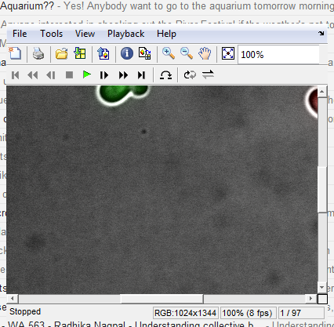
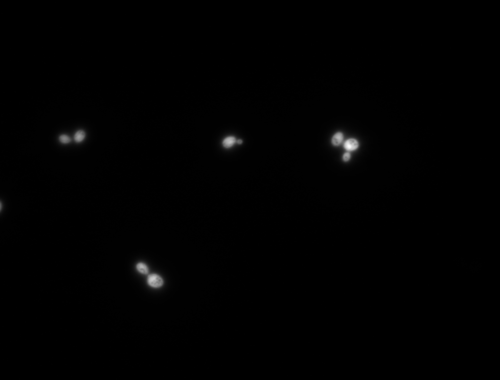
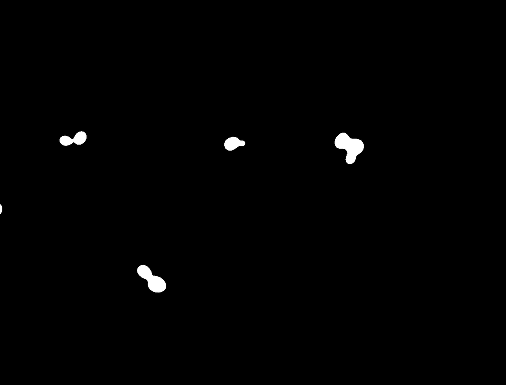
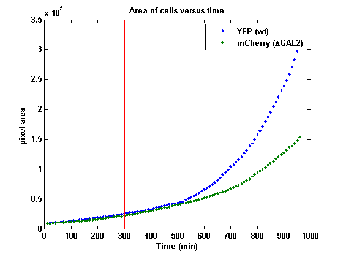
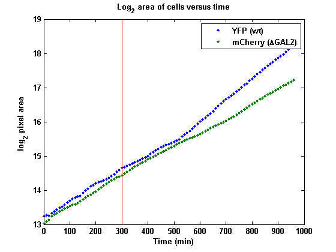
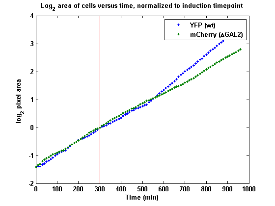
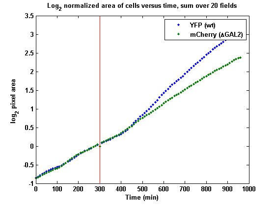

Solutions to Timelapse Microscopy Exercise
Created 6/1/2012 by JW
SPOILER ALERT This file provides solutions to the exercises from the MATLAB intro packet. The best way to remember what you learned is to spend time thinking about and doing the exercises on your own. Refer to this only after you've tried the exercises--first without, and then with the hints--and gotten stuck!
HOW TO USE THIS FILE: This solution file doubles as a step-by-step tutorial reference. Each separate task in the problem is in its own cell (delimited by a %% at the beginning of the line). You should start by reading the comments and looking at the code without running it. Try to predict what each line of code does. Then, to see the code in action, press CTRL-ENTER to run your current cell. The cells should be run in order so that necessary variables are declared at the right times.
Contents
- 0. Clear your workspace
- 1a. Load the file overlay_sequence.mat into MATLAB.
- 1b. Play the image sequence as a movie.
- 1c. Can you tell by eye which strain is growing faster?
- 2a. Plan image analysis strategy.
- 2b. Test out some segmentation code on a single frame.
- 2c. Put your code for segmenting a single frame into a function.
- 2d. Apply your segmentation to all frames. (This code takes awhile)
- 3a. Plot the pixel area of cells versus time (or frame number).
- 3b. Do some sanity checks on your data.
- 3c. Consider the effects of galactose induction.
- 4d. Consider more data.
0. Clear your workspace
Start with an empty workspace to avoid unexpected variable name conflicts
clc % clear command window clear % clear workspace close all % clear all figures
1a. Load the file overlay_sequence.mat into MATLAB.
Load a pre-processed stack of images. This loads a variable named 'imseq' into our workspace. The .mat file format is specific to MATLAB. MATLAB variables can be conveniently stored to files via the 'save' command, and loaded later using 'load'. Type 'doc save' and 'doc load' to learn more.
load('overlay_sequence.mat'); % Explore what data type and dimensions 'imseq' is whos imseq % You should see that this is a 4-D array containing data of type 'uint8'. % This is a typical data format for image files. Why are there 4 % dimensions? Maybe knowing the size of each dimension will help: size(imseq)
Name Size Bytes Class Attributes
imseq 4-D 400490496 uint8
ans =
1024 1344 3 97
1b. Play the image sequence as a movie.
implay(imseq)
1c. Can you tell by eye which strain is growing faster?
This plays the movie slower, at 8 frames per second.
implay(imseq,8) % You might be able to convince yourself that the green cells are growing % faster near the end of the movie, but it's hard to say without % quantitation.
2a. Plan image analysis strategy.
The basic approach for this problem will be identical to the technique you used in Yeast Showdown I to identify RFP and YFP cells. We choose a threshold intensity value and consider every pixel whose intensity is greater than the threshold to be part of a cell, and all other pixels as background. This is called thresholding.
2b. Test out some segmentation code on a single frame.
% Load a single image file to play with. img = imread('images/YFP/YFP_frame_1.TIF'); % Uncomment the below to segment the last frame instead % img = imread('images/YFP/YFP_frame_97.TIF'); % Or segment an mCherry frame instead % img = imread('images/mCherry/mCherry_frame_10.TIF'); % Calculate a threshold for this image using 'graythresh'. This is a % built-in function that determines the optimal threshold for % distinguishing between cells and background. thresh = graythresh(img) % Threshold the image. img_thresh = im2bw(img,thresh); % Using im2bw is equivalent to % im_thresh = double(im)>thresh % % MATLAB built-in commands are good to use, even when you're trying to do % something simple, because they often include additional optimizations and % error-checking. % Display the results figure, imshow(img,[]) % raw image figure, imshow(img_thresh) % thresholded image % How do the results look? You can see that some areas between cells are % being counted as part of cells. This is "undersegmentation." If you % increase the threshold, you will be able to eliminate some % undersegmentation, but run the risk of "oversegmentation," where a single % cell gets counted as multiple cells. This is an inherent limitation of % our thresholding-only approach. You can use more advanced operations to % get around this problem, but the purposes of this exercise we will assume % that thresholding is good enough. % Pixel area of cells area = sum(img_thresh(:))
thresh =
0.0118
area =
9657
  2c. Put your code for segmenting a single frame into a function.
This code does the same area calculation as the previous cell.
img = imread('images/YFP/YFP_frame_1.TIF'); [area, thresh_img] = segment_frame(img,graythresh(img)); % What are the inputs and outputs of the 'segment_frame' function? To see % the code, type edit segment_frame % What do these show when uncommented? % figure,imshow(img); % figure,imshow(thresh_img); % What happens if you run the function like this? % area = segment_frame(img,graythresh(img)); % Or like this? % [~, thresh_img] = segment_frame(img,graythresh(img)); % This function is pretty short. Why did we even bother writing it? What's % the advantage of putting this code in a function?
2d. Apply your segmentation to all frames. (This code takes awhile)
In other words, loop through all 97 frames in both YFP and mCherry channels, load the corresponding image file, and call your function from part c.
If you calculated the threshold individually for each frame, you may have gotten strange-looking plots from the results. This is because the graythresh algorithm seems to be sensitive to variation in illumination between frames (in particular, what does graythresh give for mCherry frame 3? Try running cell 2c. again to see). Using a single threshold (in this case, based on the last frame) means that you are using the same definition of cell and background in each frame.
numchannels = 2; % Number the channels: 1 is YFP, 2 is mCherry numframes = 97; YFP_filename_root = 'images/YFP/YFP_frame_'; mCherry_filename_root = 'images/mCherry/mCherry_frame_'; % Use a fixed threshold computed from the last frame YFPimg = imread([YFP_filename_root num2str(97) '.TIF']); mCherryimg = imread([mCherry_filename_root num2str(97) '.TIF']); thresh(1) = graythresh(YFPimg); thresh(2) = graythresh(mCherryimg); % segmentation results areas = []; % why clear this variable before the loop? % Loop through channels, frames for channel = 1:numchannels for frame = 1:numframes if channel == 1 frame_filename = [YFP_filename_root num2str(frame) '.TIF']; % what does frame_filename contain on each run of the loop? elseif channel == 2 frame_filename = [mCherry_filename_root num2str(frame) '.TIF']; end % load image img = imread(frame_filename); % segment and save result areas(channel,frame) = segment_frame(img,thresh(channel)); end end % What does the variable 'areas' contain at the end of this cell?
3a. Plot the pixel area of cells versus time (or frame number).
figure plot(0:10:960,areas','.'); % What happens if you type areas instead of areas' ? % plot vertical line at the moment of galactose induction (frame 31) hold all plot([300 300],ylim); % Why does this plot a vertical line? Figure out what ylim does: type % 'ylim' on the command line and compare the values it outputs with % the y axis on your plot. xlabel('Time (min)'); ylabel('pixel area'); title('Area of cells versus time'); legend('YFP (wt)','mCherry (\DeltaGAL2)'); % Now log-transform the data. Which axis scaling is better? figure plot(0:10:960,log2(areas'),'.'); hold all plot([300 300],ylim); xlabel('Time (min)'); ylabel('log_2 pixel area'); title('Log_2 area of cells versus time'); legend('YFP (wt)','mCherry (\DeltaGAL2)'); 
3b. Do some sanity checks on your data.
Do the plots look how you expected them to? Are the cells growing exponentially? What are possible caveats or limitations of this data? For example, before the media switch, we don’t expect a difference in growth because ?GAL2 shouldn’t affect metabolism of raffinose. Are your plots consistent with this expectation? If not, what might be the reason?
The cells are growing exponentially, since the plot of the log of their pixel areas versus time makes a straight line. The wt and mutant lines seem to have the same slope before galactose induction, consistent with our expectation that the mutation doesn't growth under non-galactose carbon sources.
3c. Consider the effects of galactose induction.
Does it look like there a cost to GAL pathway induction? Is there a difference between the growth of cells in raffinose versus in raffinose and galactose? How long does it take before there is a difference in growth between the wildtype and gal2 mutant cells? Is there a cost to galactose induction (i.e. does growth slow immediately after adding galactose)?
% To compare the two strains, you may want to normalize pixel areas to the % time of media switch. areas(1,:) = areas(1,:)./areas(1,31); areas(2,:) = areas(2,:)./areas(2,31); figure plot(0:10:960,log2(areas'),'.'); hold all plot([300 300],ylim); xlabel('Time (min)'); ylabel('log_2 pixel area'); title('Log_2 area of cells versus time, normalized to induction timepoint'); legend('YFP (wt)','mCherry (\DeltaGAL2)'); % It looks like the wt strain starts growing faster ~3 hours after % galactose induction, whereas the gal2 mutant continues growing at the % same rate as if nothing happened. There may be a slight cost to % GAL induction, since the line for the wildtype strain goes slightly below % that of the mutant strain immediately after galactose addition, but it's % unclear based on this data whether the difference is significant.
4d. Consider more data.
Load the file allfields.mat. What variables were loaded and what do their dimensions mean?
load allfields whos YFP_allfields whos mCherry_allfields % These variables contain pixel areas. YFP_allfields contains data from the % YFP channel, and similarly for mCherry_allfields. Each row is a % microscope field (20 total), and each column is a frame (97 total). % Combine the data from all the fields and plot the results. Since each % field was taken under identical conditions, we can treat the 20 fields as % one giant field and sum the data. YFP_combined = sum(YFP_allfields); mCherry_combined = sum(mCherry_allfields); % Normalize to induction timepoint YFP_combined(1,:) = YFP_combined./YFP_combined(31); mCherry_combined(1,:) = mCherry_combined./mCherry_combined(31); t = 0:10:960; figure,plot(t, log2(YFP_combined),'.'); hold all; plot(t, log2(mCherry_combined),'.'); % Induction timepoint plot([300 300],ylim); xlabel('Time (min)'); ylabel('log_2 pixel area'); title('Log_2 normalized area of cells versus time, sum over 20 fields'); legend('YFP (wt)','mCherry (\DeltaGAL2)'); % These results look similar to our analysis from a single % microscope field above. It still looks as though there's no decrease in % growth rate of the wt strain after GAL induction, although in the combined % data, the growth rate of the wt increases a little sooner after induction % than was apparent from the single-field plot (the blue line diverges from % the green line at ~450 min rather than >500 min.
Name Size Bytes Class Attributes YFP_allfields 20x97 15520 double Name Size Bytes Class Attributes mCherry_allfields 20x97 15520 double